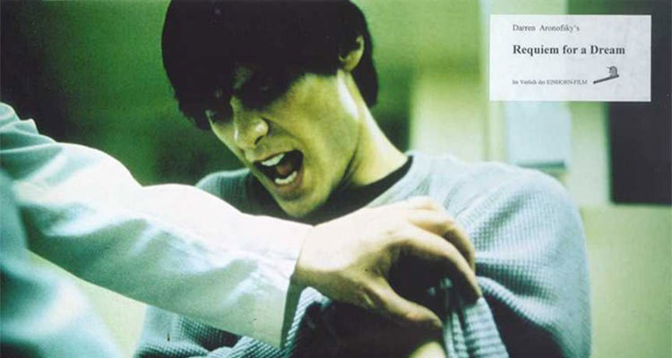
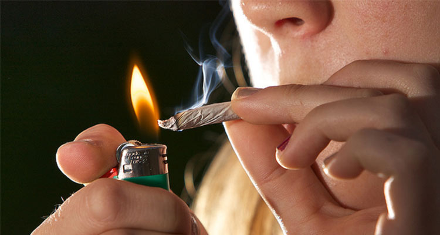
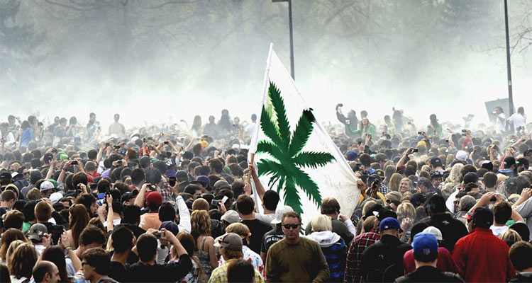
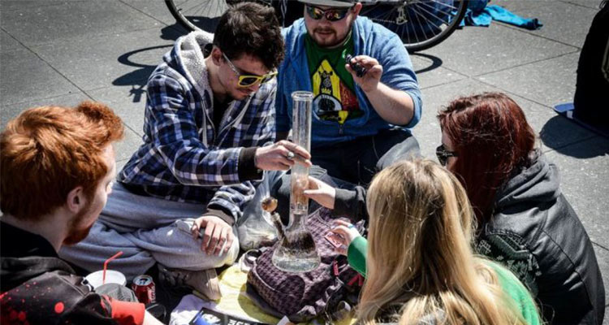
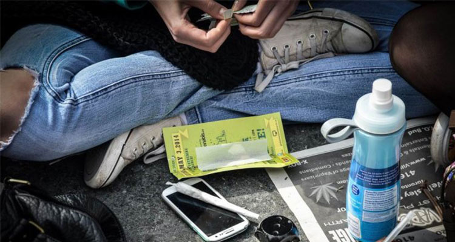

不知道大家有没有唱过KTV金曲《拒绝黄赌毒》，每次听到这个歌的时候总是会不寒而栗，因为毒品的危害，在课本中、电视上、电影里都见过，尤其是看到瘾君子毒瘾发作时候的疯狂举动，更是令人感到害怕。说到毒品，吗啡、海洛因、冰毒等等若干词汇都会浮现，但是别忘了，还有一种植物也可以让人飘飘欲仙——那就是大麻。
1936年，美国发行反大麻电影《大麻狂热》，拉开禁止大麻的序幕。以身体自主权、医学真理、经济效益为由的大麻合法化运动也在持续进行。大麻从被禁的毒品到可以合法购买，其逐渐开放的背后仍有争议。1996年，美国加利福尼亚通过了第215号提案，宣布可以出于医疗目的使用大麻。大麻逐渐由毒品转为管制的医疗药品。截至2014年1月1日，共有23个州通过该提案。当地时间2007年10月27日，美国加州，两名年轻人在旧金山大麻节上使用通气管和水管吸食医用大麻。研究称大麻的有效成份可以缓和癌症和艾滋病引起的疼痛、恶心和呕吐。医用大麻的合法化有利于病人缓解病痛。而反对大麻合法化的组织者则担心医用大麻的合法化可能导致滥用成瘾。
 1971年，美国圣拉菲尔高中一群学生约好在4点20分于学校的路易·巴斯德像前吸食大麻。此后，4月20日成为国际大麻日，开启了大麻合法化运动。
以2015年的加拿大为例，多伦多市中心的央街丹达士广场(Dundas Square)从中午开始就聚集了大量人群，得到众多赞助商支持的活动主办方在广场上搭起气势恢宏的舞台，宣传吸食、种植甚至贩卖大麻。舞台的横幅上大书大麻合法化的标语。现场人潮汹涌，目测往来人群超过千人。舞台上接二连三有面黄肌瘦的瘾君子登台宣讲吸食大麻，并公开叫板加拿大的大麻禁令。台下云集了各个年龄段的大麻吸食者，不断迎合台上演讲者的节奏高呼口号要解除大麻禁令，甚至毫无顾忌地把大麻摆在面前相互比对。
1、知乎上有一句常用语说得特别好“撇开剂量谈毒性都是耍流氓”，大麻虽然有助于镇痛，但是过量吸食肯定会上瘾；
2、看过许多因为吸毒毁一生的影视作品和文章，还是那句老话“珍爱生命，远离毒品”。